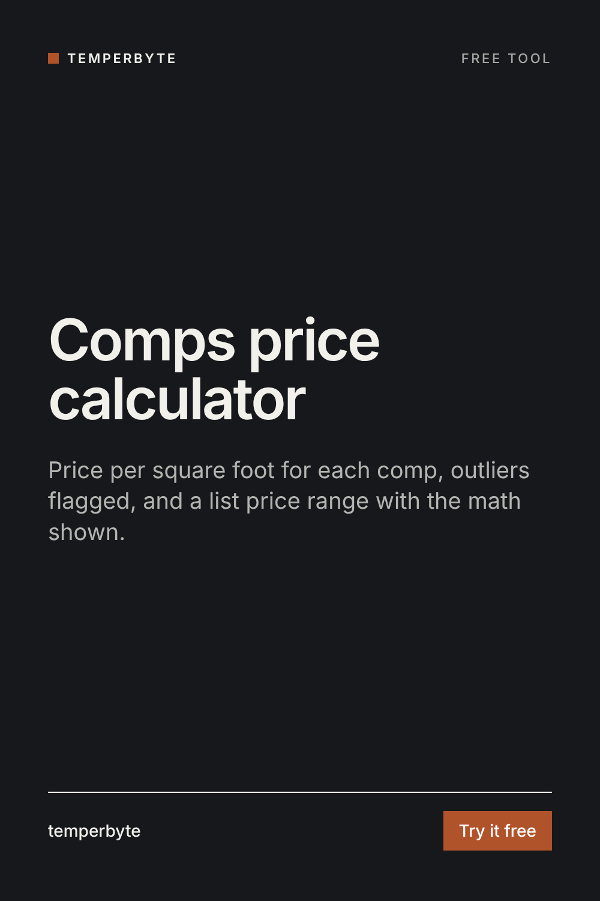

Enter the comparable sales from your CMA. You get each comp's price per square foot, the outliers flagged, the median, and a list price range with the math shown.
If you add each comp's original list price, the calculator shows the median list-to-sale ratio (sale price ÷ list price) and where offers are likely to land for your range. Days on market shows how fast the comps sold.
Adding or subtracting a fixed amount for a garage or a bathroom looks precise but is mostly guesswork. Here you only say which way the listing differs from the comps. Put numbers on specific features only when you have local paired-sales data or an appraiser's view.
If you enter the seller's target, you see how far above the median value and above the top of the range it sits, in dollars and percent. That number is easier to discuss than an opinion.
This calculator does arithmetic on the comps you enter. It is not an appraisal and not legal or financial advice. Choose comps that are truly comparable: recent, nearby, similar size, age and type.
Pricing a listing this week? The Pricing Brief skill for Claude does this from pasted comps, plus confidence, the direction of each difference, actives and expireds as market signals, and seller talking points for the listing appointment.
See Pricing Brief